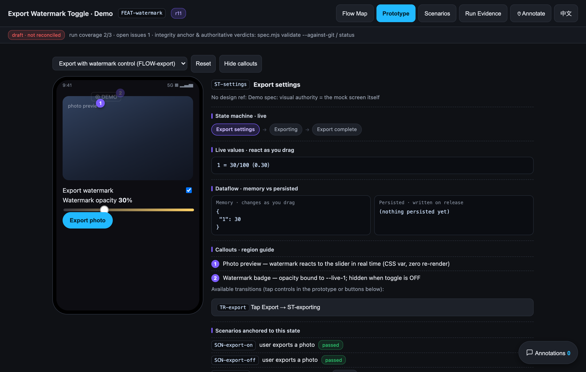
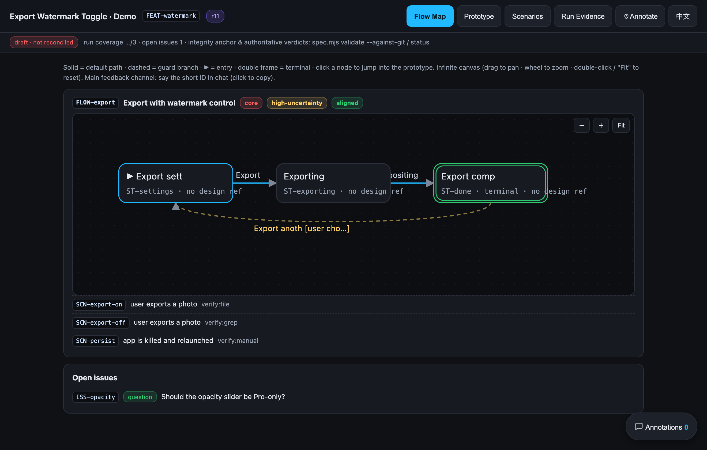
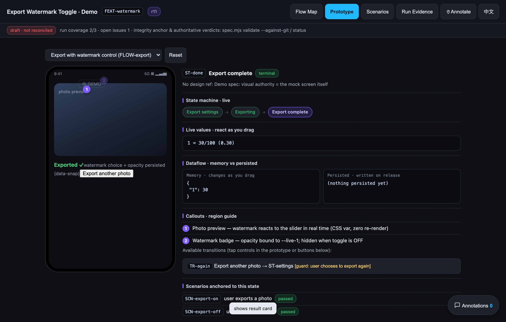
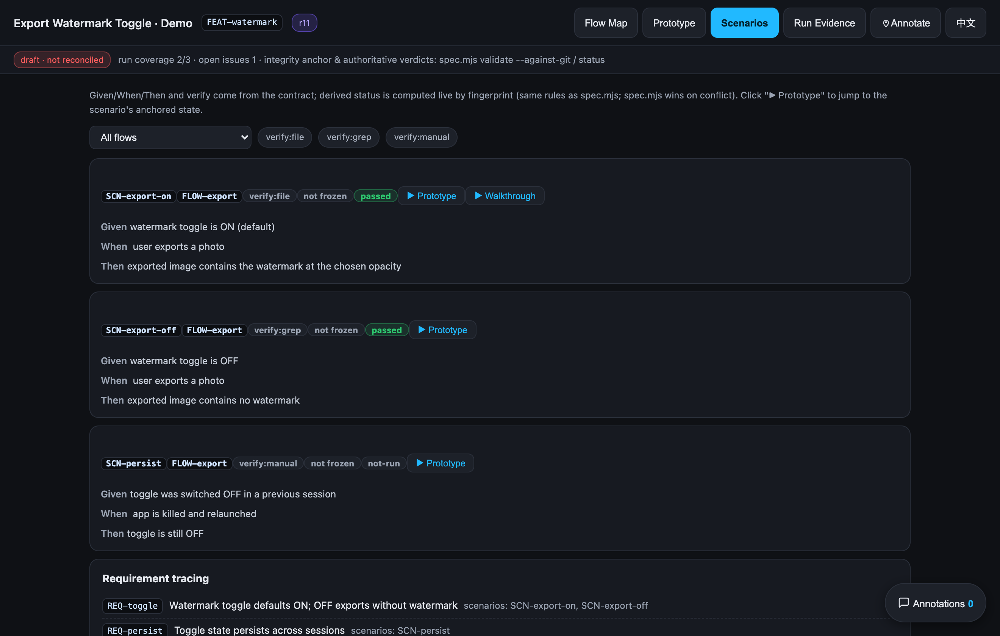
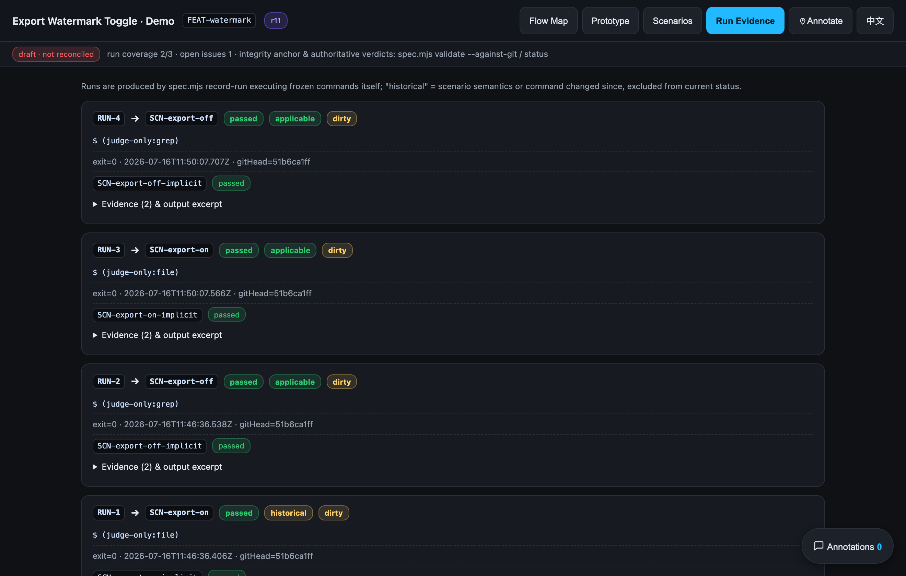

The spec is a mini app. 规格，本身就是一个 Mini App。
An agent skill that turns messy multi-source requirements (PRD / BDD / Figma / code) into a single self-contained mini-app-spec.html — machine contract, operable prototype, BDD acceptance, annotation loop and verifiable run evidence, in one double-clickable file. Built so AI coding agents can't fudge it.
一个 Agent Skill：把多来源的复杂需求（PRD / BDD / Figma / 代码）变成单个自包含的 mini-app-spec.html —— 机器合同、可操作原型、BDD 验收、批注回路、可核验运行证据，全部装进一个双击即开的文件。从机制上让 AI 编码代理糊弄不了。
npx skills add wohsj110/mini-app-spec

Documents drift. Evidence doesn't.文档会漂移，证据不会。
A hardened implementation of Matt Rickard's The Unreasonable Effectiveness of Mini Apps as Specs — the spec ships as a tiny app stakeholders click through, annotate, and hold the implementation accountable to. On top of the essay, four things a document can't have:
Matt Rickard 的 The Unreasonable Effectiveness of Mini Apps as Specs 的加固实现——规格以小应用的形态交付，评审者点着看、钉着批、拿它问责实现。在原文思想之上，补齐文档做不到的四件事：
Machine contract = SSOT机器合同 = 唯一事实来源
Flows, states, transitions, Gherkin scenarios and verification methods live as structured JSON inside the HTML — not prose.
流、状态、转移、Gherkin 场景与验证方式以结构化 JSON 内嵌在 HTML 里，而不是散文。
Status computed, never stored派生状态只算不存
Nobody — human or AI — can hand-write passed. A scenario's status is derived from evidence, or it is not-run.
任何人（无论人还是 AI）都写不了 passed。场景状态只能由证据推导，否则就是 not-run。
Evidence, not claims要证据，不要口供
Verification commands are frozen at a gate and executed by the tool itself (record-run); outputs are hashed into a ledger.
验证命令在关卡处冻结、由工具亲自执行（record-run），输出经哈希落入台账。
A review loop that closes能闭环的评审回路
Pin-style annotations anchor to stable IDs, export as structured change tickets, and block acceptance until adjudicated.
图钉式批注锚定稳定 ID、导出为结构化修改工单，未裁决就阻断验收。
One file, four views — all real, all from the live demo一个文件、四个视图——全部真实截图，来自在线 Demo
Every screenshot below is the actual artifact produced by the pipeline for a fixture feature (an export-watermark toggle — no real product data). Open it and click around.
下面每张截图都来自管线为一个虚构功能（导出水印开关，无任何真实业务数据）生成的真实产物。打开它随便点。
Flow overview — an infinite canvas state machine流总览——无限画布上的状态机
Each flow renders as a pannable, zoomable SVG state machine straight from the contract.
每条流按合同直接渲染为可拖拽、可缩放的 SVG 状态机。
- Solid = default path, dashed = guard branches, double frame = terminal
- 实线=default 主路径，虚线=guard 分支，双框=终态
- Risk tier / core / alignment badges per flow; click a node to jump into the prototype
- 每流带风险档 / core / 对齐徽标；点节点直接跳进原型对应状态
- Open issues surface right below — undecided questions never hide
- 未决 issues 就列在正下方——没拍板的问题永远藏不住

A living prototype — not a slide deck活的原型——不是幻灯片
One persistent screen per flow. Drag the slider and the watermark reacts through a CSS variable — zero re-render, values survive state switches.
一条流一块持久屏。拖动滑竿，水印透明度经 CSS 变量实时联动——零重建，状态切换控件值不丢。
- State machine chips highlight where you are, in real time
- 状态机徽标实时高亮当前位置
- Memory-state vs persisted-state dataflow panels + event log
- 「内存态 vs 已落库」数据流面板 + 事件日志
- Numbered callout pins explain regions in-picture; cloud callbacks simulated by timed auto-transitions
- 数字标注钉在画面里讲解区域；云端回调用定时自动转移模拟

Scenario acceptance — BDD cards that stay honest场景验收——不说谎的 BDD 卡片
Given/When/Then straight from the contract, each with its verification kind and a derived status no one can hand-edit.
Given/When/Then 直接来自合同，每条挂着验证方式与推导状态——没人能手改。
passedonly ever comes from evidence; the manual scenario honestly showsnot-runpassed只可能来自证据；manual 场景老老实实显示not-run- ▶ jumps into the prototype at the scenario's anchored state, with auto-play walkthroughs
- ▶ 一键跳进场景锚定的原型状态，支持自动演示走查
- Requirement tracing shows which scenarios cover which requirement
- 需求追踪显示每条需求被哪些场景覆盖

Run evidence — every claim carries its receipt运行证据——每个结论都带小票
Runs are executed by the tool itself, never reported by the agent. Each carries exit code, git head, hashed output and evidence files.
运行由工具亲自执行、绝不听 agent 转述。每条带退出码、git head、哈希输出与证据文件。
- 适用 (applicable) vs 历史 (historical): change a Then and old evidence silently invalidates
- 适用 vs 历史：改了 Then，旧证据自动失效
dirtybadges when the working tree wasn't clean — visible, not hidden- 工作区不干净就打
dirty徽标——可见，不藏 - Secret-safe grep judge counts matches without ever logging matched values
- grep 判定器只计数、绝不落匹配值——密钥安全

Three layers, one file三层架构，一个文件
The HTML is the database. spec.mjs is the only write path — if the validator fails, nothing is written. The render engine is stateless and business-agnostic.
HTML 是数据库；spec.mjs 是唯一写入口——validator 不过，什么都写不进去；渲染引擎无状态、与业务无关。
mini-app-spec.html ← the deliverable: double-click to open, no server ├── render engine (stateless · versioned · business-agnostic) ├── <script id="mini-app-contract"> ← machine contract = SSOT ├── <script id="mini-app-ledger"> ← runs / evidence / annotations / acceptances ├── <script id="mini-app-stamp"> ← envelope: per-block hashes + revision chain └── <template id="ui-ST-*"> ← declarative, zero-JS prototype screens
Four iron laws, mechanically enforced四条防糊弄铁律，机械执行
Threat model: careless mistakes, lazy shortcuts and hallucination — the last line of defense is always a human looking at evidence.
威胁模型：防误操作、防偷懒、防幻觉——最后一道防线永远是人亲眼看证据。
01Single write path唯一写入口
Contract writes only via save. Out-of-band edits are caught by envelope hashes and validate --against-git replay detection anchored to git gate commits.
合同只准经 save 写入。带外编辑被封印哈希与 validate --against-git（以 git gate commit 为锚的回放检测）抓住。
02Computed, never stored只算不存
Hand-written passed is a validator error. Zero scenarios never aggregate to green — empty sets don't pass.
手写 passed 直接报错；空集永远不变绿。
03The tool runs it, not the agent工具亲跑，不听转述
The agent supplies commands, never results. Commands freeze at a gate; behavior is fingerprinted — change a Then and old evidence silently invalidates.
agent 只提供命令，不提供结果。命令关卡冻结、行为打指纹——改了 Then，旧证据自动失效。
04Acceptance is earned验收是挣来的
Must quote the user verbatim and pass six hard preconditions: fresh source batch, zero pending annotations, per-scenario waivers for anything non-green.
必须引用用户原话，并过六条硬前置：来源批次新鲜、批注清零、非绿 core 场景逐条 waiver。
Two hard stops, per-flow soft stops两个硬停点 + 逐流软停
collect sources → map flows ─🛑 STOP ① user confirms flow list & risk tiers ↓ align flow-by-flow (states / transitions / scenarios / prototype) ⏸ user reviews each flow ↓ implementation happens outside this skill ↓ freeze commands → record-run per scenario ─🛑 STOP ② user inspects evidence → accept收集来源 → 建流图 ─🛑 停点① 用户确认流清单与风险分档 ↓ 逐流对齐（状态 / 转移 / 场景 / 原型） ⏸ 每流交用户评审 ↓ 实现（在本 skill 之外进行） ↓ 冻结验证命令 → 逐场景 record-run ─🛑 停点② 用户亲阅证据 → accept
Pairs best with mattpocock/skills: explore with wayfinder → interrogate the idea into a doc with grill-with-docs → feed doc + Figma (via Figma MCP) into mini-app-spec → escalate high-impact decision strings to grill-me. Without them, it degrades gracefully to built-in leaning multiple-choice questions.
与 mattpocock/skills 搭配最佳：wayfinder 探索 → grill-with-docs 审问出需求文档 → 文档 + Figma（经 Figma MCP）喂给 mini-app-spec → 成串高影响决策升级给 grill-me。一个不装也能优雅退化为内置带倾向选择题。
One line. Then make it prove itself.一行安装，然后让它自证。
| Step | 步骤 | Command | 命令 |
|---|---|---|---|
| Install (auto-detects Claude Code / Codex / Cursor)安装（自动识别 Claude Code / Codex / Cursor） | npx skills add wohsj110/mini-app-spec | ||
| Codex only, user-wide只装给 Codex、用户级 | npx skills add wohsj110/mini-app-spec --agent codex --global -y | ||
| Self-test: 20 + 32 cases must all pass自检：20 + 32 用例必须全绿 | node <dir>/scripts/run-fixtures.mjs && node <dir>/scripts/run-injections.mjs |
For LLM agents — paste this to any agentFor LLM——整段复制给任意 agent
Install and verify the "mini-app-spec" agent skill:
1. Run: npx skills add wohsj110/mini-app-spec --yes
2. Verify — both self-test suites must print ALL PASS:
node <install-dir>/scripts/run-fixtures.mjs # 20 cases
node <install-dir>/scripts/run-injections.mjs # 32 cases
3. Read <install-dir>/SKILL.md before first use:
- Artifacts live at docs/mini-app-spec/<feature>/mini-app-spec.html, inside a git repo.
- All writes go through: node <install-dir>/scripts/spec.mjs <command> …
- Never hand-edit the artifact HTML; edit via extract → modify JSON → save.
Requirements: Node ≥ 18 and git. Zero runtime dependencies. MIT licensed. README in English · 简体中文 · 日本語 · 한국어.
要求：Node ≥ 18 与 git。零运行时依赖。MIT 协议。README 提供 English · 简体中文 · 日本語 · 한국어。